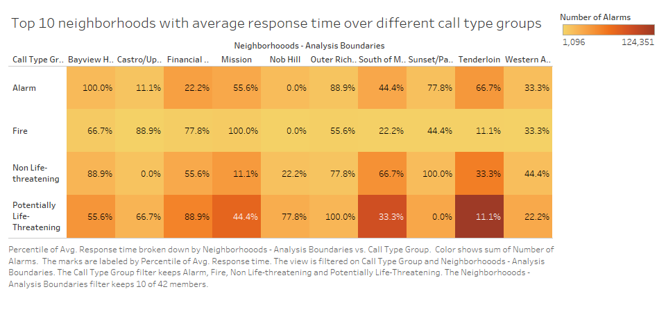

Prototypes
Goal
The visualizations on this page are focused on different call types and the reaction time in different neighborhoods.
Wrangling
This data represents points from 2015 onward. More information about the data can be found here. All null values were removed.
Tableau Prototype
Created withPrototype 1
Prototype 2

Theme Analysis
Prototype 1
How your prototypes supports the theme of the group project.
Prototype 2
So heatmap shows that Tenderloin has highest calls and highest response time. Most of the calls are "Life threatening". It shows top 10 Neighborhoods of San Francisco.cd
Planned Interactivity
The planned interactivity for prototype 1. Example:

The planned interactivity for prototype 2. Example: